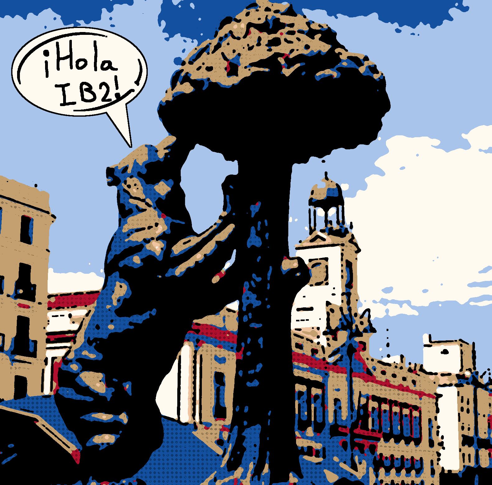
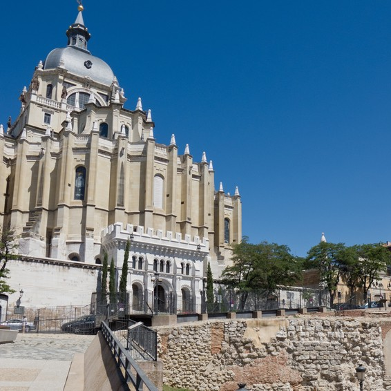
Emir Muhammad I of Córdoba builds a fortress on a hill over the Manzanares river. He calls it Mayrit, probably from the Arabic for "water channel". Spot it: what is left of the wall, below the Almudena cathedral.
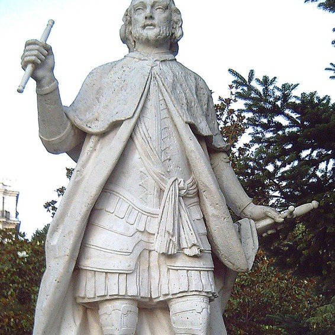
King Alfonso VI of Castile takes Mayrit. Legend says a soldier climbed the wall with his bare hands like a cat. The nickname stuck to his family, then to the whole city: madrileños are still called gatos. Spot it: his statue in the Sabatini Gardens.
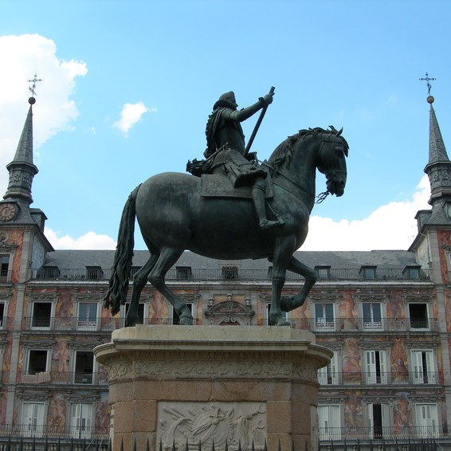
King Philip II moves the royal court to Madrid, then a small town. It has been the capital ever since (apart from 1601 to 1606). Spot it: his son Philip III on horseback in Plaza Mayor.
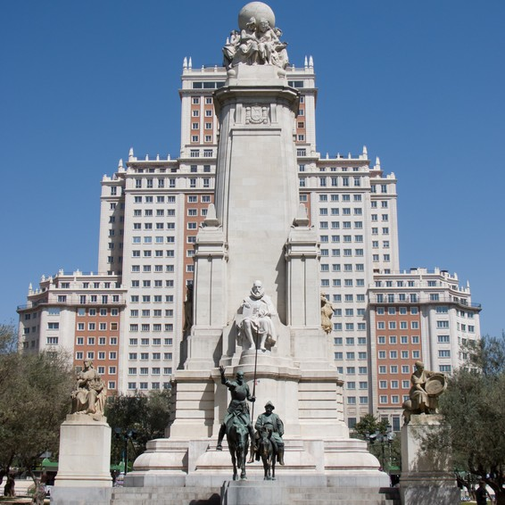
Cervantes, Lope de Vega and Quevedo live a few streets apart, in what is now the Barrio de las Letras. Spot it: Cervantes and Don Quixote in Plaza de España.
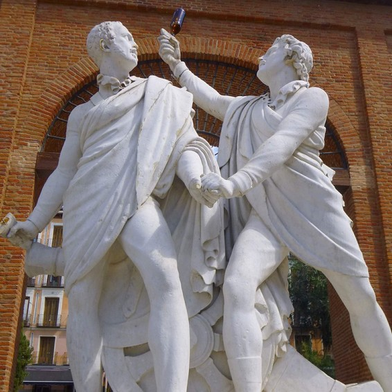
Madrid rises against Napoleon's army. Goya paints it, and the executions the next day (Prado, page 6). Spot it: Daoíz and Velarde, two officers who died defending their barracks, in Plaza del Dos de Mayo.
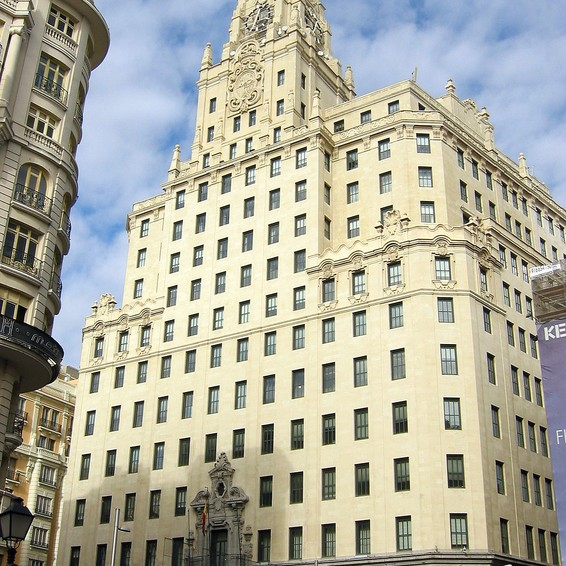
The city survives a siege through the Civil War. After Franco dies in 1975 comes La Movida: punk, art and Almodóvar films. Spot it: the Telefónica tower on Gran Vía, shelled during the siege.
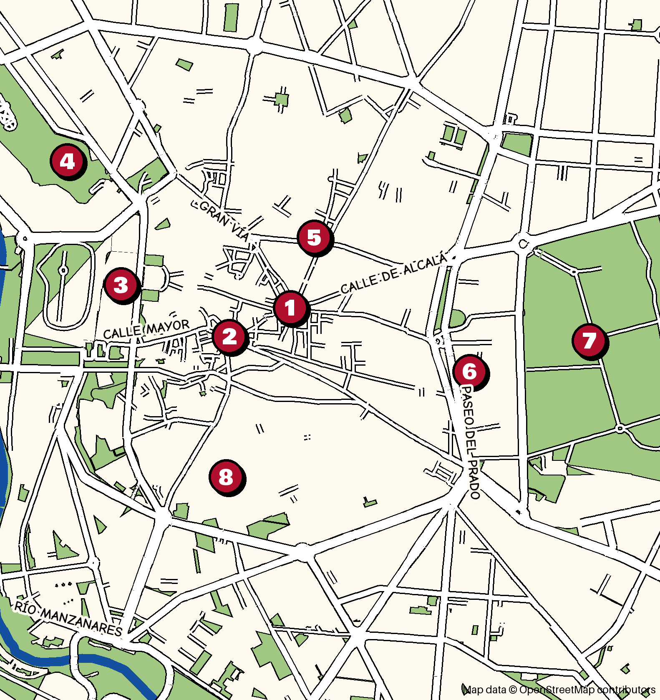
1 Puerta del Sol and Km 0
2 Plaza Mayor
3 Palacio Real
4 Templo de Debod
5 Gran Vía
6 Museo del Prado
7 El Retiro
8 El Rastro, La Latina
Over 1,000 paintings, five to hunt. Tick them on page 12.
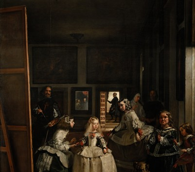
Look for the painter himself, brush in hand, and the king and queen reflected in the mirror at the back.
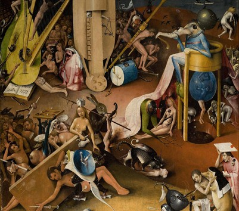
Find the music score painted on a man's bottom. A choir behind him is singing from it.
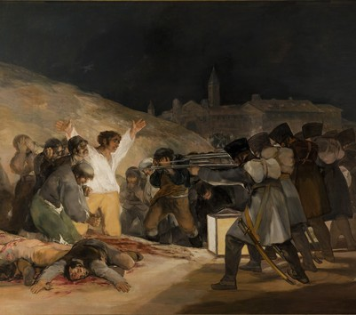
The executions from page 4. The man in white has marks on his hands like Christ's.
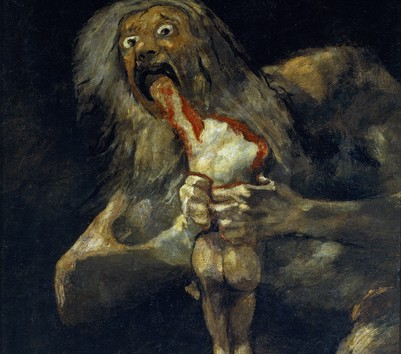
One of the Black Paintings Goya painted on the walls of his own house. They were cut off and moved here.
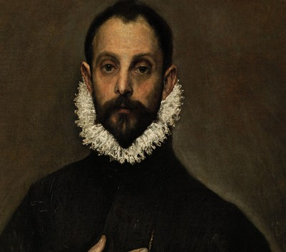
Remember his face: El Greco lived in Toledo, and you'll meet him again on page 10.
Free for you: under 18s and students up to 25 get in any time with ID, so bring your student card. Rooms change when paintings move, so check the floor plan at the door.
Banco de España L2 Estación del Arte L1
Paintings: Museo del Prado, public domain.
6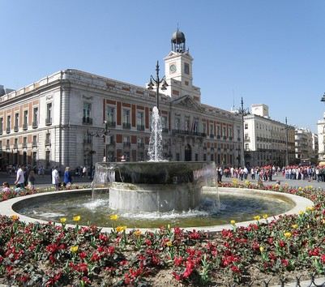
Stand on Km 0, find the bear and the strawberry tree statue, the city's symbol, and the clock that Spain watches at midnight on New Year's Eve.
Skip if: crowds bother you. It's the busiest square in Spain.
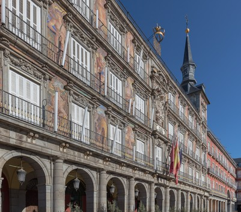
A 17th-century square that once held bullfights and trials of the Inquisition. Every Christmas it fills with market stalls.
Skip if: you're hungry. The terraces here are tourist prices.
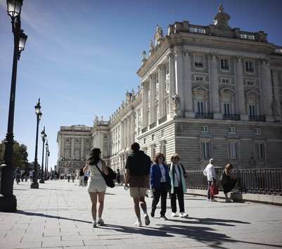
Over 3,000 rooms, the biggest royal palace in Western Europe. The king only uses it for ceremonies. EU citizens get in free on Thursday 26 November, 16:00 to 18:00.
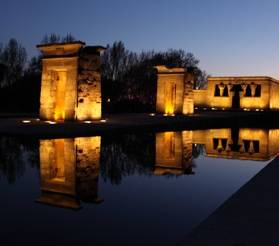
An Egyptian temple in a park. Go at sunset, around 17:50: it's the best free view in Madrid. Closed inside on Mondays.
Skip if: you're going in daylight. It's the sunset that makes it.
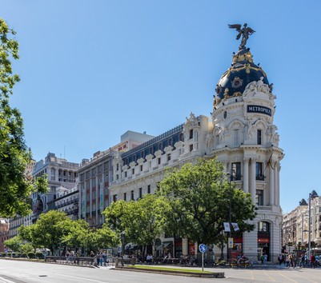
Madrid's main street: theatres, shops and early-1900s buildings. Look up at the Metrópolis dome.
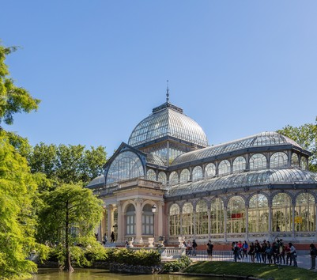
Rowing boats on the lake, the glass Palacio de Cristal, and the Fallen Angel, one of the few statues of the devil in any city.
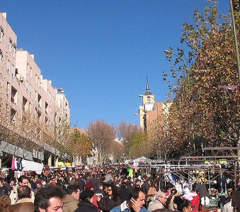
A huge street flea market, Sunday mornings only, and we are there on Sunday 29 November. Vintage clothes, vinyl, old comics.
Skip if: you'd rather sleep in. It runs 09:00 to 15:00.
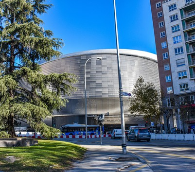
Real Madrid's stadium, rebuilt with a retractable roof. The tour takes you to the dressing room and the pitch side. Tickets from €37 online, €40 at the door.
Fried squid in a baguette, Madrid's own sandwich, cheapest in the bars around Plaza Mayor.
Potato omelette, served by the slice in almost every bar. Ask if it's poco hecha (runny).
Chickpea and meat stew served in three rounds: soup first, then the chickpeas, then the meat.
San Miguel is beautiful and expensive. San Antón in Chueca is cheaper and more local.
Churros dipped in chocolate so thick the spoon stands up. Open all day and very late. Order chocolate con churros or the thicker porras.
Half coffee, half hot milk. Want it smaller and stronger? Ask for a cortado.
A tiny shop near Sol selling violet sweets since 1915. They taste like perfume, in a good way.
Meal times will catch you out. Lunch is about 13:30 to 15:30 and dinner starts around 21:00. A restaurant that's empty at 19:30 isn't bad, it's just early.
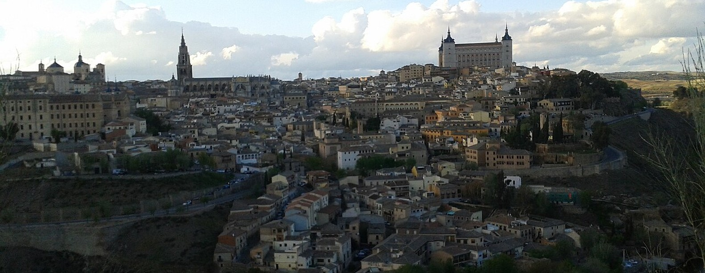
Spain's capital before Madrid, on a hill wrapped by the Tagus river. Christians, Muslims and Jews lived here side by side, so it's called the city of three cultures. The whole old town is a UNESCO World Heritage Site (1986). The Avant train from Atocha takes about 33 minutes.
El Greco's Burial of the Count of Orgaz, same painter as the Prado nobleman. The boy at the front is his son, and the handkerchief in his pocket carries the year he was born, 1578.
Gothic, enormous, and full of El Grecos in its sacristy.
A synagogue built by Muslim craftsmen, later turned into a church. Three cultures in one room.
The view in the photo above, in person, from across the river.
"Mazapán de Toledo" is a protected name, like champagne: only marzipan made in Toledo province can use it. Buy a box in the old town.
Toledo steel has been famous since Roman times. Shops still sell swords. You can't fly home with one.
Hola, buenas hi (to anyone)
¿Me pones…? can I get…?
La cuenta, por favor the bill
¿Dónde está el metro? where's the metro?
¿Cuánto cuesta? how much?
Para llevar to take away
Sin gluten / vegetariano gluten-free / vegetarian
Perdón sorry, excuse me
¡Qué guay! how cool
Vale OK (you'll hear it 100 times)
Buy a red Tarjeta Multi card (€2.50) at any station and load a 10-trip ticket for €7.30. Friends can share one card, tapping in one at a time. Or get the Tourist Ticket: 4 days for €27.80, card included.
Cards work almost everywhere. Tipping is optional: round up or leave a coin or two.
Late November averages 6 to 14 °C, with some rain. The sun sets around 17:50.
Free, from any phone, with interpreters. Keep bags zipped on the metro and in Sol: pickpockets love tourists.
Cover art adapted from a photo by Carlos Teixidor Cadenas, CC BY-SA 4.0.
12